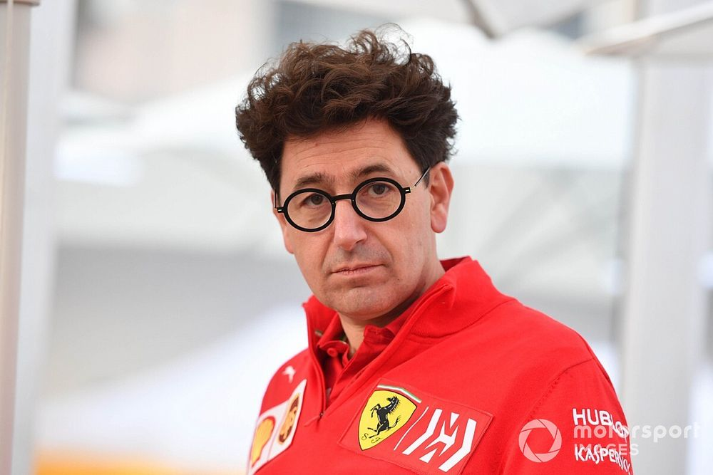
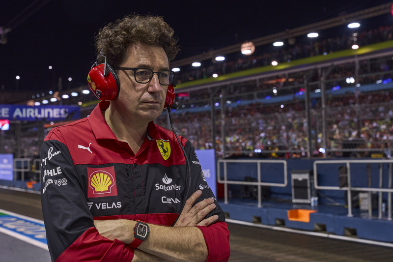

比诺托其人其事
比诺托，全名马蒂亚·比诺托，1969年11月3日出生于瑞士洛桑。本科毕业于洛桑联邦理工学院，机械工程学士学位；硕士毕业于摩德纳雷焦艾米利亚大学，汽车工程硕士学位。1995年加入法拉利F1车队引擎部门，2013年成为法拉利F1引擎部门主管，2016年成为车队技术总监，2019年成为法拉利F1车队领队。
点击进入小丑的官方介绍
人长得不怎么地，车队管的跟翔一样，你说你情何以堪呢？


|

|
比诺托之罪状
1 - 法拉利车队在2017-2018年经历短暂辉煌后，于2019年再次滑向衰落；2020年创下车队排名第六的近年来最差成绩; 2020和2021年全年没有赢得一场比赛，2022年在经历了良好开局后严重高开低走。
2 - 车队管理极其混乱，车辆研发落后的同时还因为作弊被限制引擎马力，策略组常年失误，换胎工时不时整活，车队始终无法做到团结一致赢得该应得的比赛。
3 - 挑起内斗，逼走前任领队毛里齐奥·阿里瓦贝内。本来还有希望改善的车队彻底被扼杀在摇篮里。
4 - 不知悔改，总是在记者面前嘴硬说车队没问题。
5 - 一句话：此人科班出身，并没有管理车队的经验！
法拉利未来何去何从？
- 法拉利现在的首要任务甚至都不是争夺总冠军，而是内部人员需要进行一次大换血！
- 已经有众多资深F1车手表示看不懂比诺托糟糕的管理方式，但是比诺托居然嘴硬说到："旁观者很容易批评车队。" 此等妖孽，不换他换谁！大家说对不对啊！
- 如果继续只能研发出一辆足够快的车但是依旧保持着这个混饭吃的管理方式和团队的话，这支车队恐怕将继续十年如一日的无冠。
- 明年到底会怎样，拭目以待，但是也不用抱太大期望！